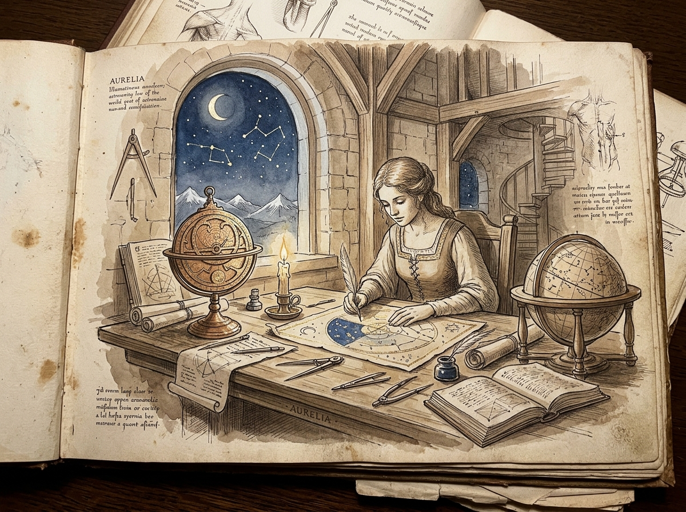
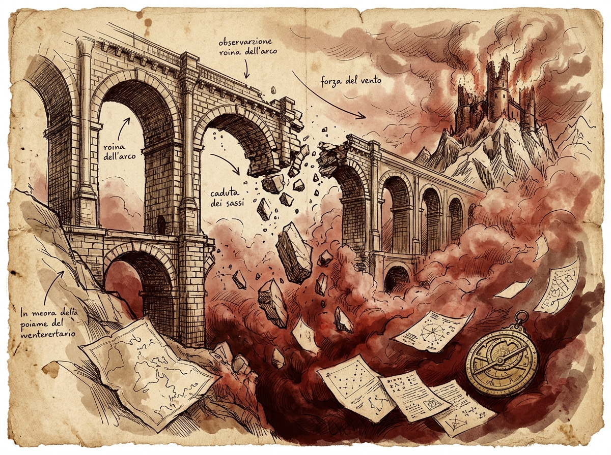
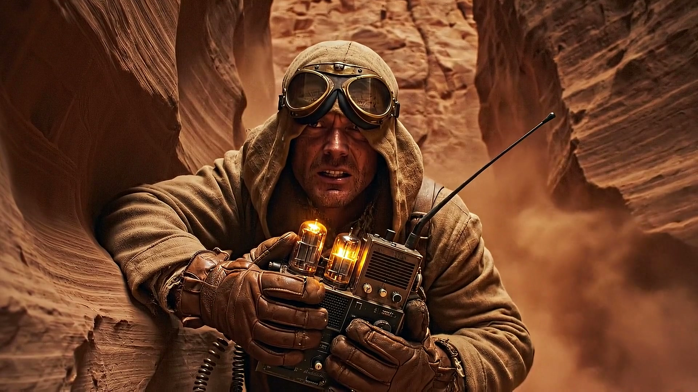
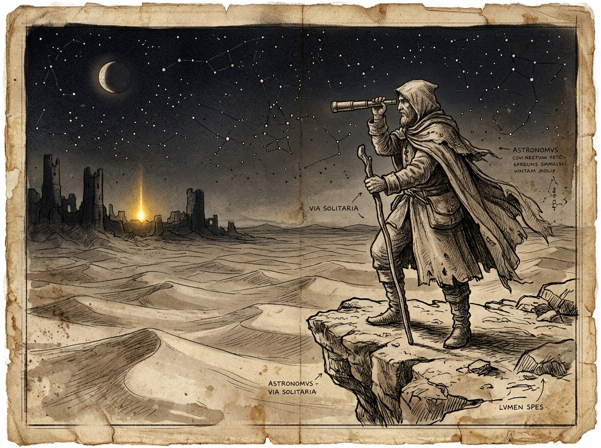

The Man Behind the Maps
I. The Caliper and the Silver Dust
Long before the mountain towers fell silent, before the roads were buried by dust and the old world broke, the Cartographer was not an old man living in shadows. He was young, burning with ambition, and possessed by a brilliant, restless mind. His real name was Hermes.
He lived in the highest tower of the Alpine Observatory, where cold winds blew against the windows and the rooms smelled of warm tea, old paper, and metal tools. But he was not alone in that quiet solitude. With him lived Aurelia—an astronomer whose calm heart brought him peace, and an artist who painted the night sky with deep blue ink, gold powder, and silver leaf.

In those proud, feverish years, young Hermes rarely stopped to simply admire the stars. While Aurelia found quiet peace in the serene wonder of the night sky, his mind was consumed by restless ambition. He was obsessed with unravelling the grand mysteries of the Order—above all, the legendary architecture of the Three Ancient Towers. Night after night, while the mountain froze outside, he sat over worn manuscripts, architectural drawings, and mechanical schematics, determined to decipher the hidden mechanisms that would unlock the ancient founders' vaults and bring immortal renown.
Aurelia never shared his hunger for forgotten vaults or worldly glory. Her world was the quiet majesty of the constellations. While he argued over complex mechanisms and unsolved riddles, she sat by the hearth, gently grinding lapis lazuli into deep blue pigment and applying silver leaf to her star charts. When the alpine frost chilled his hands, she wrapped her warm wool shawl around his shoulders and set a bowl of hot soup beside his drafting compass.
One winter morning, after five days without sleep, Hermes collapsed over his desk, his head resting on scattered notes and numbers. When he woke hours later, soft morning sunlight filled the room. Aurelia was still sitting at his bench. Her eyes were red with exhaustion, her fingers stiff with cold. She was patiently finishing the complex drawings and calculations he had left behind, saving his life's work line by line so nothing would be lost.
Looking at her bowed head, and the gentle care with which she blew dry the fresh ink on his parchment, something hard and stubborn broke inside Hermes's heart. For years he had chased distant glory and forgotten vaults, completely blind to the true wonder living right beside him.
That evening, Hermes put his ambitious schemes away. Taking a plate of polished brass, he spent weeks engraving a master star dial: a beautiful disc marked with twelve hours and the rings of the night sky. It was not made to unlock ancient vaults. It was a gift of love—a puzzle of four turning rings that revealed a secret message only when aligned with the stars she loved most.
On the terrace, under a clear sky of winter stars, Hermes took Aurelia's ink-stained hands into his own, pressed the brass dial into her palms, and whispered the truth he had discovered too late:
Aurelia... all these years I tore the world apart looking for an ancient treasure to make us immortal. I was blind. You were the only light that mattered. You were always the treasure.
Aurelia cried soft tears of joy and hung the dial from a cord around her neck. For a short time, the high tower knew peace.
II. When the Sky Wept Blood
One year later, in the autumn of 1971, came the terrible day of the First Cataclysm.
To understand what happened, one must picture where they lived. The Alpine Observatory did not rest upon safe, solid ground. It was built atop an isolated pillar of rock, right at the jagged southern border known as Deserti Limen—the edge of the mountain world. Below its cliffs lay a colossal canyon that dropped thousands of feet straight into the southern desert. The only path connecting the observatory tower to the safe mountain mainland was the Southern Bridge: a magnificent, two-tiered stone bridge built with ancient arches spanning across the empty abyss.
The disaster struck just after midday. Without warning, a colossal earthquake tore through the bedrock of the canyon fault. At the very same moment, a violent red sandstorm surged out of the southern desert, rising into the sky like a tidal wave of choking crimson dust. The sky turned a bruised, unnatural purple, and hurricane-force winds howled through the mountain peaks.
Inside the observatory turret, the violent shaking threw heavy furniture across the rooms. Glass lanterns shattered against the flagstones, spilling burning oil across dry drafting paper, scroll racks, and wooden worktables. In seconds, thick black smoke and bright flames engulfed the upper workshop.
Hermes grabbed Aurelia’s hand and pulled her down the spiral stairs. They burst out through the tower gate and ran onto the high stone bridge, heading toward the solid mountain cliff where the shelter vaults were carved into the rock. The stone arches trembled beneath their feet, but safety was only fifty paces ahead.
Then, halfway across the bridge, Aurelia suddenly pulled her hand free and stopped.
She looked back at the burning tower. In that moment of panic, she realized what was still trapped in the flames: the polished brass star dial Hermes had spent weeks engraving for her—his precious vow of love—along with the leather portfolio containing his life's master star maps. She knew how much his work meant to his soul. She could not bear to let his masterpiece burn into ashes.
«Aurelia, no! Leave it!» Hermes screamed through the roaring wind. «Run to the cliff!»
But she had already turned back. Covering her mouth against the heat and smoke, Aurelia sprinted through the embers and disappeared into the burning tower entrance. Desperate with terror, Hermes turned around and ran back across the stone bridge after her.
Moments later, Aurelia stumbled out through the flaming doorway, coughing violently from the smoke. She was holding the brass dial clutched tightly against her chest with one arm, and the leather case of maps under the other. Seeing Hermes on the bridge, a look of immense relief washed over her face, and she ran back out onto the high span to meet him.
They were only three paces apart, reaching out with both hands, when the second massive earthquake shockwave struck.

With an ear-splitting crack of fracturing granite, the keystone of the central arch gave way. The entire middle span of the bridge sheared clean off, dropping straight into the empty void. The stone pavement crumbled from beneath Aurelia's boots.
Hermes threw his entire body forward onto the edge of the remaining stone pier. His chest slammed hard against the broken rock, scraping his skin as he lunged out over the abyss. For a single, fleeting second, his trembling fingers caught the rough wool of her sleeve. He pulled with all his strength—but the falling stones tore her away.
The map case split open in mid-air, scattering loose star charts and coordinates across the gale like white leaves. And there, falling through the blinding red dust and roaring wind, Aurelia disappeared into the deep desert canyon below, clutching the brass dial to her heart until the storm swallowed her completely.
III. A Name Turned to Ash
Hermes survived the fall of the mountain, but the man he used to be was gone forever.
When the red storm finally stopped three days later, the mountain world was completely changed. The old paths were buried under deep red dunes. The observatory was a ruined, silent tomb. Hermes climbed down into the canyon on his knees, digging through the sand with his bare hands, desperately searching for a piece of cloth, a scrap of brass, anything. There was nothing. Only endless, shifting red sand.
His grief was unbearable, and he blamed himself completely. It was his ambition and his hunger for ancient treasures that had brought them to this dangerous mountain. If he had never chased forgotten ruins, Aurelia would still be alive.
«Let it be written upon this stone: the scholar once called Hermes has thrown his maps, his instruments, and his past into the fire. He has sworn never to answer to his former name. From this day on, he walks as a nameless wanderer across the ridges.»
He gathered every remaining paper that carried his name. One by one, he threw them into the flames. He made a solemn promise: never again would he answer to the name of Hermes.
He retreated into the solitude of the mountain peaks, donning a weathered traveler's cloak and brass protective goggles. To the few travelers and scholars he encountered along the high alpine passes, he gave only a cold, simple title:
« THE CARTOGRAPHER »

In his sorrow, he abandoned his old hunger for vaults and renown. Yet he refused to believe that Aurelia was truly gone without a trace. He needed answers. He needed to search every fissure, shadow, and gorge of the southern abyss. To conduct his search, he made the high summit his permanent fortress. Over the course of twenty-seven solitary years—from 1971 to 1998—he rebuilt the Alpine Observatory stone by stone, hauling heavy brass tubes, glass lenses, and mirror quadrants up the mountain trails. By night, he used its giant telescopes to map the stars and calculate the celestial meridians; by day, he turned his long-range lenses downward toward the abyss of Deserti Limen, searching the endless red sands for any glint of polished brass, any scrap of cloth, or any sign of the dial he had crafted for her. In his notes and field maps, he signed only one humble name: « The Cartographer ».
In Autumn, 1998—twenty-eight years before the Call—he packed his surveying gear and descended to the very edge of the abyss for the grueling Frontier Survey at Deserti Limen, recorded in his personal field journal. Armed with a vacuum-tube radio receiver and measuring rods, he mapped the sheer sandstone canyon where the bridge had fallen. Yet despite weeks of scanning the dust, the desert remained completely silent. No light flashed. No signal answered his calls. Believing his search had failed, he returned to the high observatory, resigned to living out his days in a cold world of pure mathematics.
IV. The Distant Light
Years went by in unbroken silence after the 1998 expedition. Nearly half a century had passed since the day the Southern Bridge fell.
The Cartographer grew old in his high mountain tower, keeping his nightly vigil over the southern void, convinced that Aurelia's brass dial was lost forever beneath forty cubits of moving dunes.
Then came a crystal-clear night in the autumn of 2016—exactly ten years before the Call. The Cartographer sat alone at his telescope on the precipice of Deserti Limen, watching the cold moonlight wash over the southern horizon.

The mountain air was biting cold. He trained his optical lens south toward the far desert horizon, where the buried sandstone arches of the second ancient tower lay hidden beneath the dunes. And there, far out in the dangerous sands where no traveler could survive, he saw it.
A small, rhythmic pulse of golden light.
It was not a campfire, and it was not a star. It was a clear, steady beam of light, flashing with mathematical precision between the ruined sandstone pillars: three short pulses, a pause, and two long flashes. It was the exact secret light code he had engraved upon Aurelia's brass dial on the observatory terrace all those years ago.
Whether the brass dial was signaling on its own through ancient mechanisms, or whether Aurelia's legacy lived on in the heart of the desert, his heart reignited with ferocious hope. The ice broke. After forty-five years of living like a ghost among cold equations, he felt the terrifying power of purpose.
That night, with trembling hands, he took a fresh sheet of vellum and signed his master celestial map with his true, definitive title:
« THE CARTOGRAPHER OF DISTANT LIGHT »
The distant light was not a hallucination. It was real. But the Cartographer knew he could not simply hike down into the dunes. The southern desert was a lethal expanse of moving sandstorms and treacherous nomad territories. Ancient records of the Order revealed that to unlock the path through the desert, one had to master the celestial alignment of the Three Ancient Towers: the Alpine Observatory in the snowy peaks, the Sandstone Tower in the desert dunes, and the Stage Tower.
To bridge the divide between the mountains and the desert, the Cartographer spent the next ten years crafting his magnum opus in the observatory workshops: The Astrolabe of Distant Light. It was a master instrument designed to measure the six key stars, calculate the celestial meridian, and align the Three Towers when the time arrived.
Night after night, he kept his lonely vigil at the edge of the canyon, watching the golden light flicker across the distant dunes. He knew that one day, a worthy seeker would follow the trail of stars he had left behind across the peaks, unlock the brass dial's secret vow, and face the shifting sands to bring the truth to light.